Overview of the application
Discover what Assalim is and its main features
Assalim is a complete business management solution, designed for retail shops, parapharmacies and food-service establishments. It brings together in a single web interface all the tools you need to run your day-to-day activity: sales, purchasing, stock, cash register, reports and more.
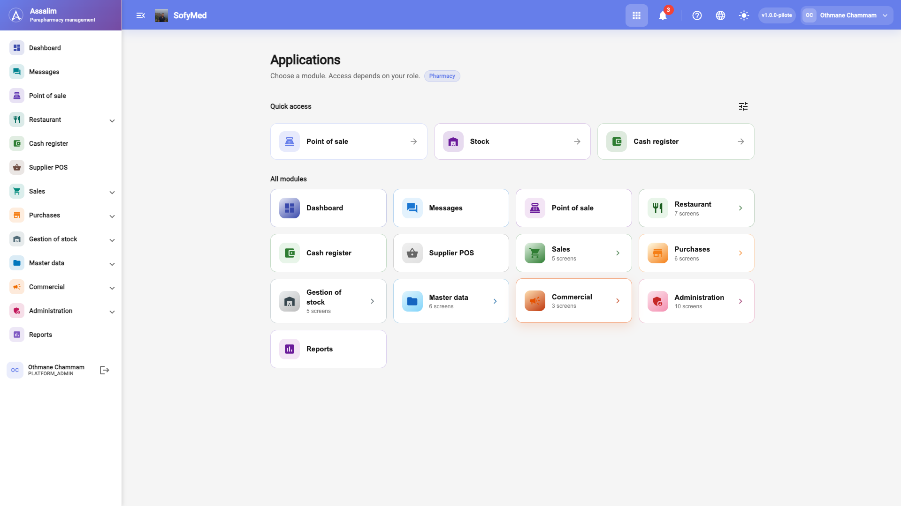
1.1 Main features
| Module | Description |
|---|---|
| Hub | Application centre: quick-access tiles to modules (sales, purchasing, stock, etc.) according to your rights |
| Dashboard | Summary view of KPIs (turnover, margins, top products, today’s sales) |
| Point of Sale (POS) | Single touch till (sales and purchasing): tiles, ticket, Charge keypad, split tender, barcode / GS1 scanner, customer display, PIN lock |
| Sales | Full cycle: quote → order → delivery note → invoice → payment |
| Purchasing | Full cycle: proposal → order → goods receipt → supplier invoice → payment |
| Stock & Inventory | Real-time tracking, sites / warehouses, transfers, physical stocktakes, stock-out alerts |
| Cash register | Opening/closing the till, cash movements, closing report |
| Reports | Sales, purchasing, margin and stock reports, CSV / Excel / PDF exports |
| HoReCa | Floor plan, table orders, kitchen display (KDS), reservations, statistics, waiter call via QR, delivery board (phone / Glovo / Uber) |
| Mobile app | Manager view on a phone (/m): today’s turnover, cash register, alerts, shortcuts — PWA or Android APK |
| Messaging | Internal messaging between users of your establishment |
| Settings | Company configuration, users, roles, permissions, licence, database backup |
1.2 Roles and user profiles
Assalim manages several access levels. An administrator can assign a role to each user according to their responsibilities.
| Role | Description | Typical access |
|---|---|---|
| Administrator | Full access to all features and settings | Everything |
| Manager | Supervision of sales, purchasing, reports and stock | Sales, Purchasing, Stock, Reports |
| Pharmacist / Salesperson | Sales operations, stock consultation | POS, Sales, Stock (read) |
| Cashier | Collections and cash-register operations | POS, Cash register |
| Kitchen (KDS) | Viewing and updating kitchen orders | Kitchen display only |
| Platform admin | Technical SaaS role: global configuration (e.g. system mail), no business access by default | Instance settings, not the usual sales/purchasing flow |
Sign-in & Navigation
How to access the application and find your way around
Screenshots for documentation: to avoid the guided-tour window (dashboard, POS), open the application with ?noTour=1 in the URL at least once per browser session. The Playwright script in the docs/scripts folder uses a 1920×1080 viewport, adds noTour=1, and for POS screens reloads the first transaction from recent history (you need at least one sales / purchase invoice depending on the screen, according to the POS current document type).
2.1 Sign in
Open your web browser (Chrome, Firefox, Edge…) and enter the address of your Assalim instance (provided by your administrator). The sign-in page is displayed automatically.
Enter your credentials
Enter your email address and password in the corresponding fields.
Click “Sign in”
Press the button or use the Enter key on your keyboard.
Access the application
If your credentials are correct, you are redirected to the home page (the Hub grid) or to the first page allowed by your profile. The dashboard remains available from the Hub or the side menu. The side navigation menu is collapsed by default after sign-in (or registration): use the menu button (menu / menu_open) in the top bar to show or hide it; your choice is remembered on this device.
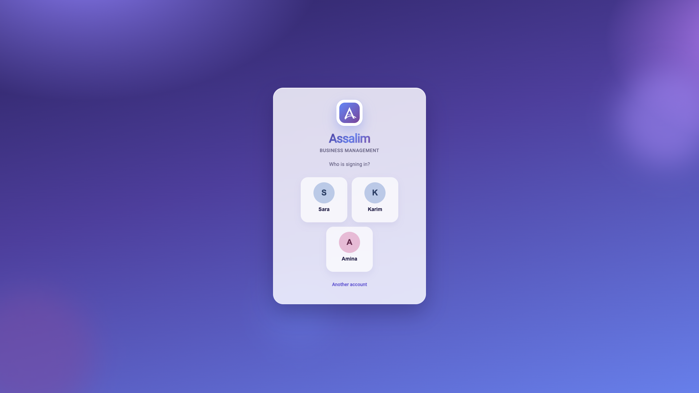
On a station already used, the page may show remembered profiles (initials and first name). Tap a face: if a till PIN is set for that account, a numeric pad opens; otherwise enter the password. Other account returns to the email / password form.
2.2 Forgot password
If you have forgotten your password, click the “Forgot password?” link at the bottom of the sign-in form.
Enter your email address
Enter the email associated with your Assalim account.
Receive the OTP code
A one-time verification code (OTP) is sent to you by email.
Enter the OTP code
Enter the code you received on the verification page.
Set a new password
Choose a new secure password and confirm it.

2.3 General interface
The Assalim interface combines a side navigation bar (menu, on the left in French or English — on the right in Arabic RTL), a top toolbar and a main content area.
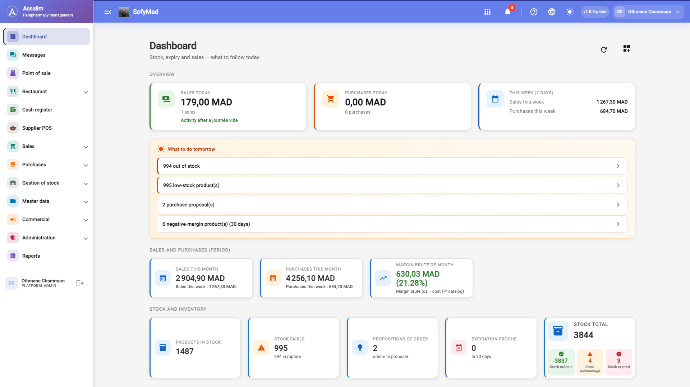
Interface elements
- Side menu: access to modules (grouped by theme: sales, purchasing, master data, etc.). It can be hidden or shown via the dedicated button in the toolbar; after sign-in or a user switch, it is hidden by default to leave more room for content.
- Toolbar (header): logo or establishment name, then on the right: applications icon (back to the Hub), notification / alert centre (bell), Help menu (guided tour, quick navigation, built-in user manual), sun or moon icon (light, dark or automatic theme), language (FR / EN / AR), user switch, account menu (password, settings, kiosk mode, locked modes, sign out). On a small screen, several of these actions are grouped under the More menu (more_vert).
- Banners: depending on your deployment, banners may appear (trial, licence to activate, expired licence, offline mode)
- Document context banner: when you view a sales or purchase document, a coloured bar recalls the flow (sales / purchasing), the document type and quick actions
- Content area: displays the selected page or module
- Side-menu footer: reminder of the signed-in user and the sign-out button
2.4 Hub (application centre)
The Hub is the home grid: coloured tiles represent feature families (sales, purchasing, stock, reports, etc.). Click a parent tile to show sub-modules, or a simple tile to open a page directly (e.g. dashboard, cash register).
The applications icon (apps) in the toolbar always takes you back to the Hub. The tiles shown depend on your rights and, for stock, on the establishment setting Disable stock management.
At the top of the Hub, a strip of quick actions (cash register, POS, alerts…) depends on the establishment type.
An “Open the manager app” banner leads to the phone view /m (chapter 16).

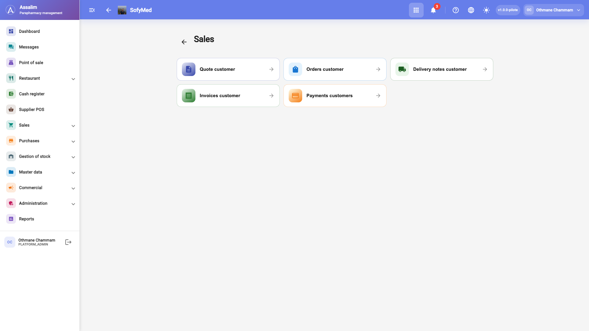
2.5 Display theme (light or dark)
You can adapt the application to your visual comfort or to the room lighting. Click the sun or moon icon in the toolbar (or open the More menu on a phone or tablet, then the theme section).
- Light: light background, dark text.
- Dark: dark background, light text.
- System: Assalim follows the day / night setting of your browser or device; if you change the Windows or macOS theme, the application can follow automatically.
Your choice is saved on this device: when you sign in again from the same browser, the theme returns as you left it.
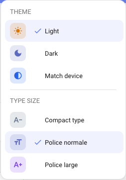
2.6 Help menu: guided tour, quick navigation, manual
The Help button (question mark) opens a menu with three entries useful every day:
- Discover the interface: a short guided tour of the main screens (dashboard, POS, etc.). You can leave it at any time.
- Quick navigation (Ctrl+K): a dialog to jump quickly to a module by typing a few letters.
- User manual: opens this guide inside the application, convenient for consulting a procedure without leaving your session. The manual follows the interface language (French, English or Arabic). The Export PDF button saves the guide in that same language: in the print window, choose “Save as PDF”.
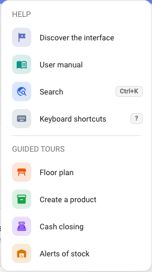
2.7 Universal search (Ctrl+K)
Press Ctrl+K (or ⌘K on Mac) from any page to open the search palette. Type a few letters to find instantly:
- A product by name or barcode
- A customer or supplier
- An invoice by number
- An application module
Navigate with the ↑ ↓ keys, confirm with Enter, close with Esc.
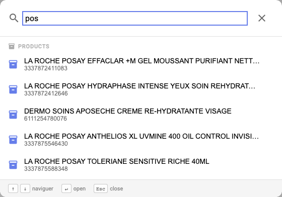
2.8 Keyboard shortcuts
Press ? from any page (outside an input field) to display the list of available shortcuts. You can also reach it via Help menu → Keyboard shortcuts (?).
| Shortcut | Action |
|---|---|
| Ctrl+K | Open universal search |
| ? | Keyboard shortcuts panel |
| Esc | Leave kiosk mode / close dialogs |
| F1 | Contextual POS help |
| Ctrl+Enter | Submit a form |
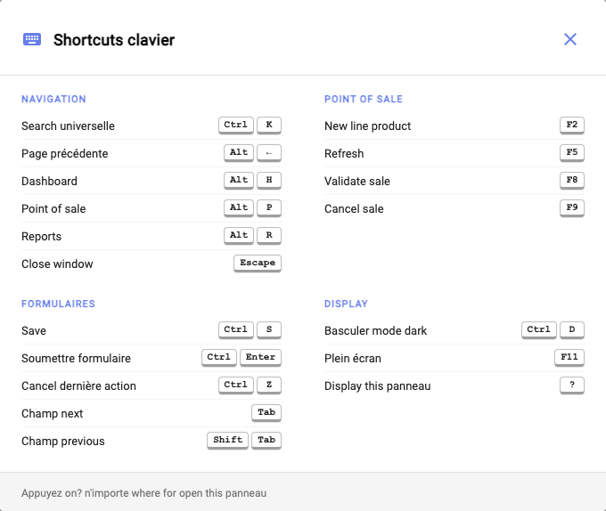
2.9 Adjustable typography
You can adjust the text size from the Theme menu (palette icon at the top right). Three levels are available:
- Compact: smaller text, more information on screen — ideal on large tables and monitors.
- Normal: recommended standard size.
- Large: larger text — ideal for accessibility or remote screens.
The choice is saved automatically and applies across the whole application.

2.10 Locked modes (cashier / waiter)
In addition to kiosk mode (full screen, free exit — see §6.4), the account menu (👤 icon) offers two locked modes intended for floor or till staff. Exit requires a manager password (unless an administrator, manager or pharmacist is already signed in).
| Mode | Allowed screens | Exit |
|---|---|---|
| Locked cashier mode | POS and cash register only (no side menu) | Esc or exit button → manager password |
| Locked waiter mode | Floor plan, tables, counter (notification bell visible) | Same |
| Kiosk mode | Unrestricted full screen | No PIN |
A sign-out also lifts the lock. These modes prevent a cashier or waiter from opening settings, reports or other modules during service.
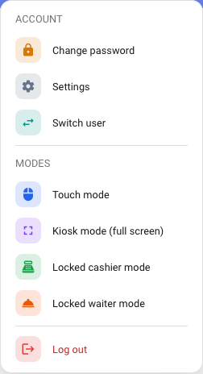
2.11 Touch mode
Touch mode enlarges buttons, table rows and fields (targets of about 48 px) across the whole app — lists, invoices, stock, menu — not only the till. It is on by default on every station (till, tablet or desktop).
- The on-screen keyboard and numeric pads (login PIN, OTP, till, close cash, quantities) use the same style everywhere: light keys, 48 px targets, primary actions.
- Account menu (👤) → Exit touch mode for a compact mouse layout on this station only.
- The same menu → Touch mode to turn it back on.
Dashboard
Overview of your key performance indicators
After sign-in, you generally land on the Hub (see chapter 2). The dashboard opens from a Hub tile or from the side menu. It gives a synthetic, immediate view of your commercial activity.
Scrolled view: bottom of the dashboard (same page as the chapter 2 “General interface” figure), to show charts and blocks below the first screen height. The capture is produced at a 1920×1080 viewport after automatic scrolling when images are generated.
Indicators displayed
| Indicator | Description |
|---|---|
| Today’s turnover | Total of sales collected today |
| Month sales | Cumulative sales for the current month |
| Gross margin | Difference between turnover and purchase cost |
| Active customers | Number of customers with recent purchases |
| Top products | Best-selling products over the period |
| Sales by category | Turnover breakdown by product family (chart) |
| Sales trend | Daily or monthly trend chart |
| Recent advances | List of the latest deposits received |
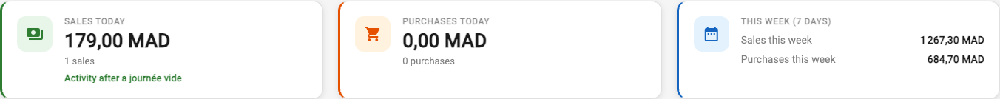
3.1 Customisable dashboard
You can choose which widgets to show on the dashboard by clicking the Customise icon (🔧) next to the Refresh button.
A panel opens with the list of all available widgets:
- KPIs — today’s sales/purchases, monthly margin
- Cash session — status of the open till
- Daily sales — 30-day line chart
- Sales by category — pie chart
- Top products — ranking of best-selling products
- Sales vs Purchases — monthly comparison
- Stock alerts — products out of stock or low stock
- Purchase proposals — count of replenishments to validate
Tick/untick freely. Click Reset to restore the default configuration. Your preferences are saved automatically.
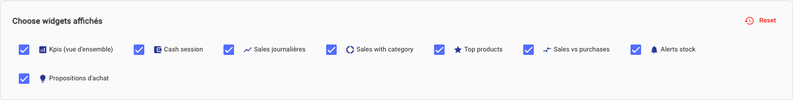
3.2 Action plan “What to do tomorrow”
Below today’s indicators, the dashboard displays a ranked list “What to do tomorrow” when attention points exist. Each line opens the relevant screen (cash register, stock, expired items, receivables, etc.).
Typical priority order:
- Till closed
- Stock-out
- Expiry within 7 days
- Receivables over 30 days
- Low stock
- Negative-margin products
- Purchase proposals to process
/m, chapter 16) reuses this action plan exactly.
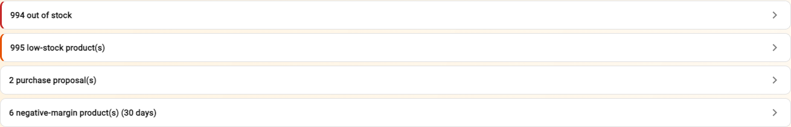
Product catalogue
Management of products, categories and units of measure
4.1 Products
The Products section lets you manage your entire catalogue: create, edit, search and delete items.
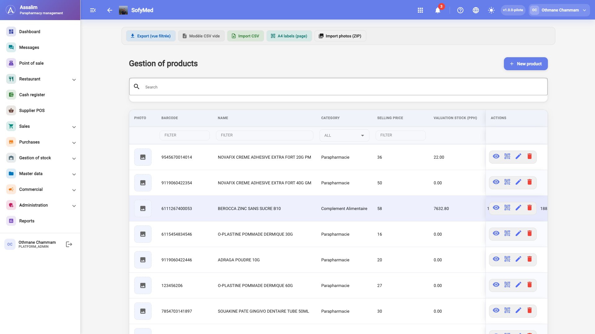
Create a new product
Open the form
Click the “+ New product” button at the top of the list.
Fill in the information
Enter the name, barcode (or let it be generated automatically), category, unit, purchase and selling prices, and minimum stock.
Add an image (optional)
Import a product photo to make it easier to identify at the POS.
Save
Click “Save”. The product appears immediately in the list.
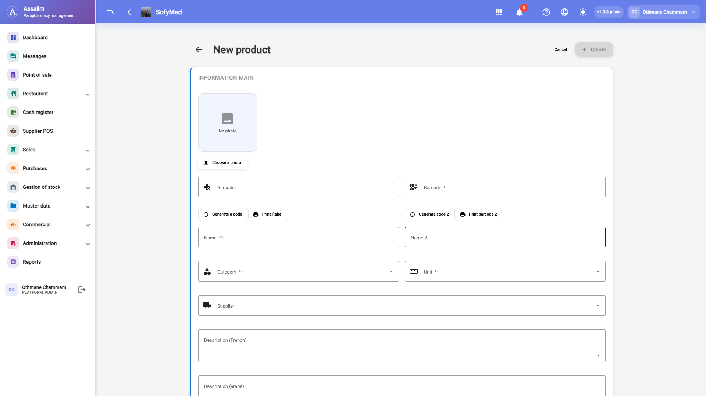
Product fields
| Field | Description | Required |
|---|---|---|
| Name | Commercial designation of the product | ✅ |
| Reference / Barcode | Unique identification code (EAN, QR…) | — |
| Category | Product family | ✅ |
| Unit | Selling unit (piece, kg, litre…) | ✅ |
| Purchase price (excl. tax) | Cost from the supplier | ✅ |
| Selling price (incl. tax) | Price shown to the customer | ✅ |
| Block discount | Prevents line discount on sales (%, amount, forced price). Ticket-wide discount remains allowed. Off by default. | — |
| Block return | Prevents sales returns (returned quantities on the ticket or credit note). Purchase returns remain allowed. Off by default. | — |
| Block price change | Prevents changing the catalog sale price from the till (⋯ Edit price). The product record remains editable. Off by default. | — |
| VAT | Applicable tax rate | — |
| Minimum stock | Alert threshold when a stock-out is imminent | — |
| Expiry date | Management of perishable products | — |
| Description | Internal notes or detailed description | — |
Print labels
From the product list: A4 labels (one 50×30 mm label per unit of sellable stock on the page; stock 0 skipped) and, on each row, the label icon for a single roll print. From the product record: print the primary or secondary barcode. Whether the price appears on the label is set in general settings (“Price on labels”).
Kitchen extras / modifiers (HoReCa)
On the product record (no need to click Edit), the Kitchen extras / modifiers card lets you add extras (cheese, double meat, cooking…) with an optional surcharge. These options then appear at the table or counter till. Reserved for profiles that administer the floor plan (manager, admin).
4.2 Categories
Categories let you organise your catalogue into logical families (e.g. Medicines, Cosmetics, Hygiene, Food supplements…).
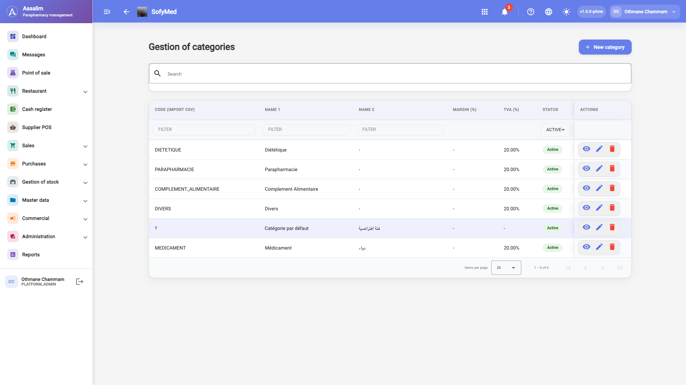
To create a category, click “+ New category”, enter the name and confirm. You can also edit or delete an existing category via the action icons on the right of each row.
4.3 Units of measure
Define all units used in your activity: piece, box, gram, litre, etc. These units are selected when each product is created.
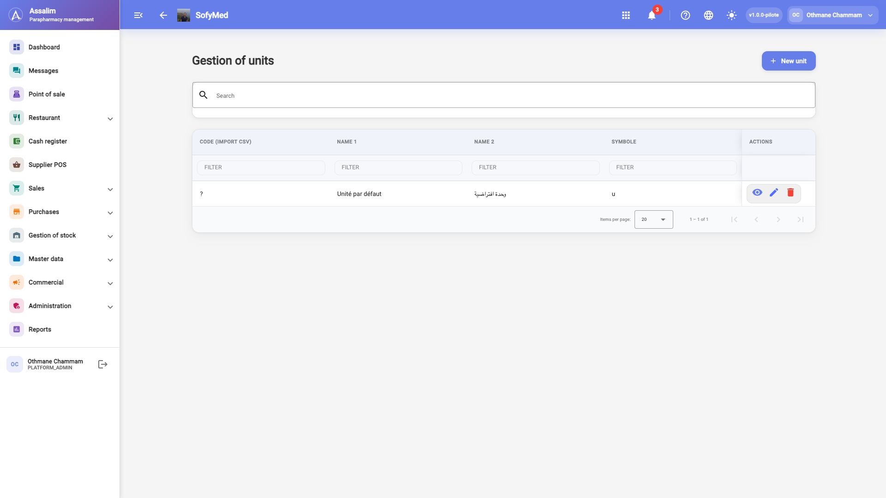
Customers & Suppliers
Management of your commercial address book
5.1 Customer management
The Customers section centralises all information about your buyers: contact details, purchase history, balance and advances.
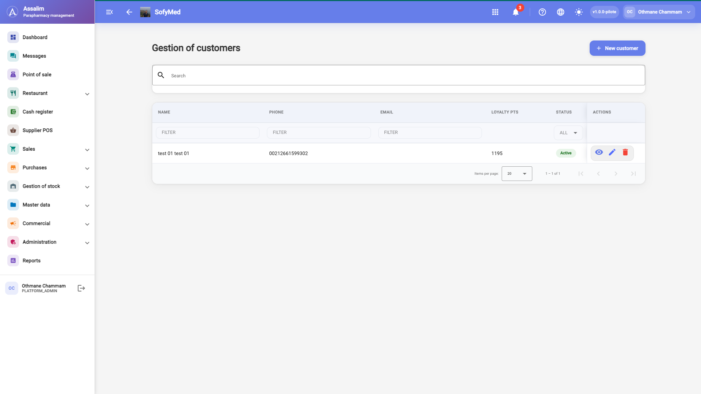
Create a customer
Click “+ New customer” and fill in the following information:
- Name / Company name (required)
- Phone and email address
- Postal address
- Default payment terms
- Authorised credit limit (0 = credit not allowed; empty = no ceiling)
- Internal notes
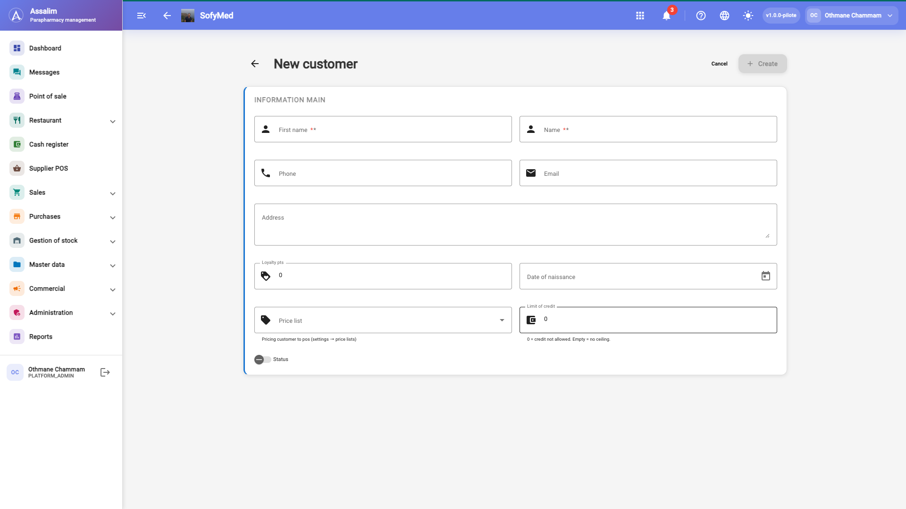
Customer record — detail
Clicking a customer in the list opens their detailed record, which shows:
- Full contact details
- Order and invoice history
- Payments made and current balance
- Advances and deposits
5.2 Supplier management
The Suppliers section works in the same way as customers, but oriented towards your supply partners.
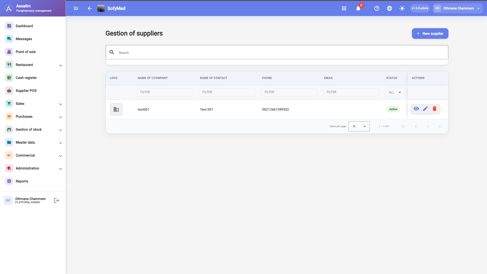
Information specific to a supplier includes:
- Trade name and company name
- ICE, trade register number (Morocco)
- Contacts (phone, email)
- Purchase and supplier-invoice history
- Amount due and payment history
5.3 Payment terms
Define your shop’s standard payment terms (cash, 30 days, 60 days net, etc.) and associate them with your customers and suppliers.
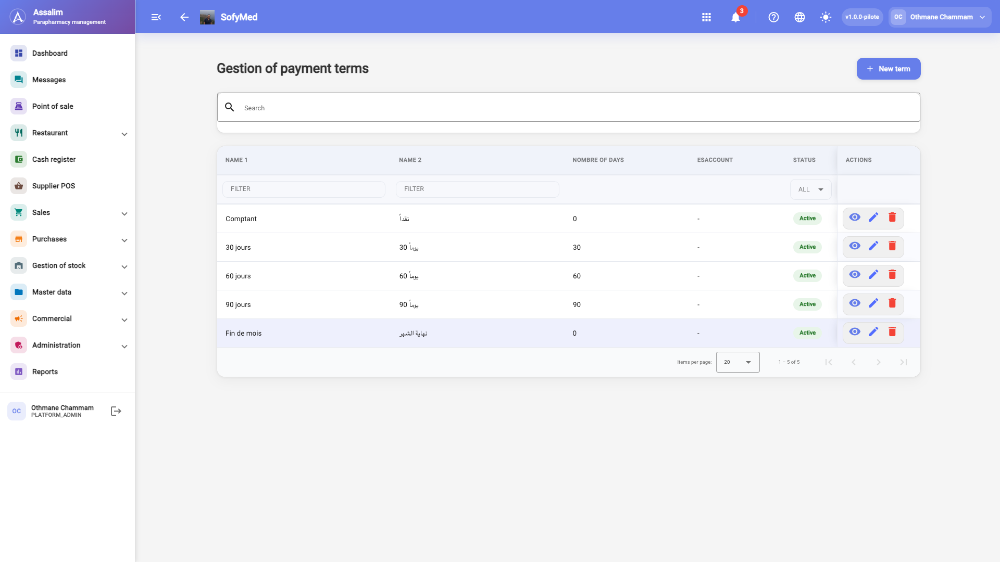
Point of Sale (POS)
Fast till for sales and purchasing
6.1 Sales POS
Open Point of sale (/pos). The till opens without the ERP sidebar
(dashboard hidden): categories (name + second name if set, like product tiles) and product tiles on the left, ticket and
keypad (tender, quantity, discount) on the right. In Settings → Till screen options (§15.9) you can hide the catalogue (categories and tiles): barcode scan and search remain, aligned with the ticket width; from two characters a temporary list lets you pick the product, and the ticket uses the extra width (aligned columns, action buttons visible). With no line, the ticket shows only the customer chip (or supplier on the purchase POS) and the keypad is a calculator (+ − × ÷ =); as soon as a product is added, it becomes Tendered / Qty / Discount again. The Calculator button on the top bar (and in the ⋮ menu) opens a modal (+ − × ÷ =) without hiding Charge; close it with the X, the backdrop or Escape. Show ERP menu brings the chrome back.
On a phone or portrait tablet, the ticket opens as a sheet from the Ticket bar. History (F8) is on the top action bar
(not in the ticket header). An out-of-stock product (sellable stock 0) can still be added:
an “Out of stock” badge appears; at Charge, a dialogue asks you to confirm anyway.
The on-screen keyboard opens from the keyboard icon, not on focus.
The bar also offers Refresh, Calculator, Lock the till (§6.11), restore last ticket (F9) and clear cart (F10) — no second clear button on the ticket header.
Each item added to the ticket is stored in the browser at once: after F5, Restore last invoice stays on the bar (the ticket stays empty until you restore).

Make a sale
Select or scan products
Tap a tile, or scan the barcode (USB gun: no need to touch the screen). An EAN pasted in search is added on its own; the field clears and the cursor returns there. A single X clears search (not the browser’s extra X). On a phone or tablet, the Scan button (camera icon) opens the camera — it is hidden on a 15–24″ till (USB gun) and does not drive the gun. Filter by category or favourites. The In stock filter is already on when you open the till (§6.9): out-of-stock items are hidden from tiles (scanning still works). The Used 90 d button (off by default) keeps only products sold at least once in the last 90 days — the full paged catalogue, not just the 12 quick products.
Adjust quantities
On the ticket, the name uses the full width next to the thumbnail. Below: − / qty / +, the total, the close button then ⋯, aligned from one line to the next. If the catalogue is hidden (§15.9), search lines up with the ticket; each line keeps aligned columns (price, quantity, total) and shows discount, return, note and price buttons (the ⋯ menu stays in catalogue mode). Or the Qty keypad. Tap a line to show its discount and/or return panel (if any) and hide the other products’ panels. Tap the already selected line again to deselect it. Discount, return and kitchen options: ⋯ (catalogue mode) or the line buttons (catalogue hidden) — same style as Language / Theme (§6.3).
Select a customer (optional)
The Customer chip is always on the ticket. Search and associate a customer: balance, credit limit and loyalty only appear then (§6.10).
Charge
Choose the method (Cash, Card, Cheque, Credit) on the keypad, enter the amount received (or Exact), then Charge. If tips are enabled (§15.1), a Tip line appears at the bottom of the payment block (under the methods or split): tap it and enter a MAD amount on the pad. Choose Cash (drawer) or On card (the terminal takes invoice + tip). The amount and mode are kept in the draft (F5 / Restore) and stored on the invoice. The invoice total does not change. For several methods on the same sale, use Split payment: tap a line to select it and type the amount on the Received pad; + Cash / + Card / + Cheque / + Credit adds a share. Credit is the unpaid remainder on the customer account (not a tender): a customer is required. Stamp duty may be added according to the rates in §15.1 (outside turnover, like a tip). Charge + ticket prints at the same time if the option is visible.
Print or send the receipt
If a network receipt printer is set on the cash register station (host, port 9100), the ticket is sent as ESC/POS; otherwise the browser preview. A cash sale can pulse the drawer if the option is enabled. A receipt can also be emailed.
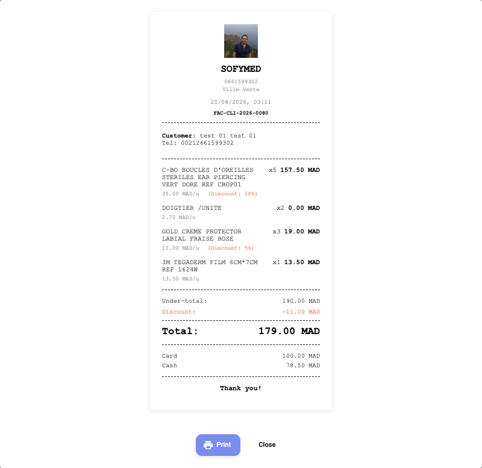
6.2 Purchase POS
The Purchase POS (/purchase-pos or Supplier POS menu)
is the same touch screen as sales, with a Purchase badge
and the supplier chip. It records a receipt and updates stock.

Select the supplier
The Supplier chip is always visible. Search and select the supplier: their balance appears if it is set. No loyalty or commercial pricing on purchase.
Scan or add received products
Scan each item or select it from the list and enter the quantity received. The To order button (the purchase equivalent of “In stock”) is off by default: turn it on to show only stock-outs and items below minimum.
Check purchase prices
Confirm or adjust the purchase price of each item. Price history is kept.
Confirm the receipt
Tap Charge (or the equivalent Confirm). Stock is updated immediately.
6.3 Discounts, margin and conversion at the POS
The paragraphs below complete the Sales POS and Purchase POS when you transform an existing document (quote, order, delivery note / goods receipt, etc.) into another document from the till screen, or when you adjust prices at collection time.
Line discount (Sales POS)
- Tap a ticket line to open its discount panel (if a discount is set) and/or return panel, and hide the other products’ panels. Tap the already selected line again to deselect it (panels close).
- If your role can edit products (admin, pharmacist, manager), ⋯ also offers Edit price: a dedicated screen saves the product’s catalog sale price (not only a ticket-line discount). If the product has Block price change, the entry stays visible but struck through and greyed out.
- On the ticket, tap ⋯ on the line then Discount (or the keypad Discount mode): percentage, amount or forced price. If the catalogue is hidden (§15.9), the Discount button is already on the line. If the product has Block discount, Discount stays visible but struck through and greyed out; ticket-wide discount remains available.
- Likewise, ⋯ → Return (or the Return button on the line when the catalogue is hidden) enters saleable / damaged / expired quantities. If the product has Block return, Return stays visible but struck through and greyed out; purchase returns remain allowed.
- In percentage mode, the keypad decimal point enters rate decimals (e.g. 10.5%). The amount in MAD is then rounded to the coin step (14.50 − 10% = 13.05 → 13.10 if the step is 0.10). The Sales / Line discounts recap, cash received and change use the same step (§15.1).
- The reference purchase price (PPH) is shown if it is filled in: do not go too low.
- If the effective selling price falls below PPH, a below PPH chip appears on the line.

Conversion to another document (source quantity)
When the POS is open in conversion mode (for example quote → order, order → invoice, delivery note → invoice, or equivalent on the purchase side), each line from the source document shows under the quantity selector the mention “Source qty”: this is the quantity on the original document. You can change the quantity on the new document while keeping this reference visible.
- Sales POS: conversion order → invoice or delivery note; source quantity displayed for all imported lines.
- Purchase POS: same principle when loading a supplier document in conversion in the purchase POS.
Restaurant / kitchen order and invoicing (Sales POS)
If you use the HoReCa module: an order line marked cancelled in the kitchen can be reused when converting to an invoice from the POS. A badge indicates this status; the quantity to invoice is proposed as 0 (you can increase it if a partial invoice is needed). The source quantity on the order document remains displayed as above.
6.4 Kiosk mode (tablet full screen)
Kiosk mode hides the sidebar and toolbar to turn the POS into a full-screen application — ideal on a tablet at the till or for self-service.
Enable
Account menu (👤 icon) → Kiosk mode. The screen goes full screen, the sidebar disappears.
Exit
Press Esc or hover the top-right corner to reveal the Exit kiosk button.
6.5 Offline mode
Assalim automatically detects loss of Internet connection. When you are offline:
- A red banner is displayed at the top of the screen.
- POS sales continue to work normally and are saved locally.
- The number of sales waiting to be synchronised is shown on the banner.
- When the connection returns, an orange banner indicates synchronisation in progress, then disappears automatically.
6.6 Loyalty programme at the POS
If the loyalty programme is enabled (Commercial → Loyalty, §14.1), a widget appears automatically on the ticket as soon as a customer is selected on an invoice. This is not a toggle in till screen options: with no customer, nothing is shown.
- Shows accumulated points and the level (Bronze / Silver / Gold).
- Shows progress towards the next level.
- Lets you enter a number of points to redeem → a corresponding discount is applied automatically.
Points are credited automatically after each confirmed sale.

6.7 Barcode scan and GS1 DataMatrix
Three ways to add an item by code:
- USB gun: types into the till like a keyboard. An EAN (≥ 6 digits) goes to the basket without getting stuck in search or the Tender keypad.
- Search bar: pasting or scanning an EAN adds the product; a name (e.g. ZIAJA) filters the catalogue.
- Scan button: shown only on phone / tablet; opens the camera, then the same product lookup. Hidden on a desktop till (USB gun).
The field accepts a classic EAN code and a GS1 DataMatrix (often printed on cartons and lot-tracked products). The scan automatically extracts:
- the GTIN (product identifier) to find the item;
- the lot number if it is present in the code;
- the use-by date (DLC) if it is present.
This information is offered when adding to the basket (lot / use-by selection). A simple barcode (EAN-13) continues to work as before.
6.8 Customer display
On a second screen (tablet facing the customer, till screen), open Customer display
from the POS action bar. A /pos/customer-display window shows in real time
the basket, quantities, amount due, returns and loyalty points.
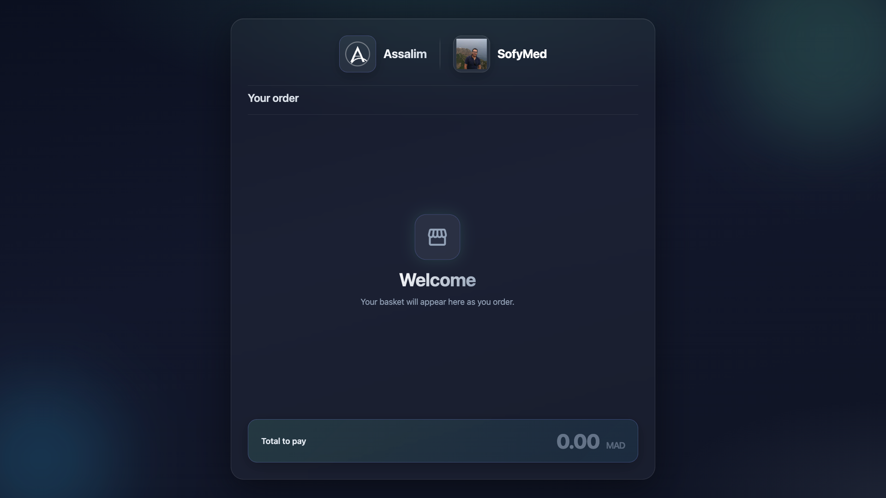
The display updates by itself as long as the POS stays open on the main station. A promotional message and a QR code (loyalty, reviews, menu) can be configured in settings.
6.9 Catalogue: In stock and Used filters
Above the catalogue tiles, next to search, the In stock button appears only if stock management is enabled (“Disable stock management” unchecked, §15.1). When you open the sales till, the filter is already on.
- On (sales default): only tiles with sellable stock > 0 remain (all categories, search and favourites).
- Off: the full catalogue returns, including out-of-stock items. You can then add a zero-stock item. Charge is only possible if Allow negative stock is on (§15.1): a dialog asks for confirmation, then sellable stock goes below zero. Otherwise Charge stays blocked.
- A barcode scan of a zero-stock product still works: the filter only affects the tiles (and the search list if the catalogue is hidden, §15.9).
- On the Purchase POS, the same slot shows To order (stock-outs and below minimum), off by default.
Next to it, on the sales POS only, the Used 90 d button (off by default) limits tiles to products that appeared on a non-cancelled invoice in the last 90 days. It combines with In stock, a category or search. Unlike the Quick products tab (favourites + last 12 sold), this filter pages the full matching catalogue. Scanning a product not sold in that window still works.
6.10 Customer, balance and pricing
On the touch till, the Customer (sale) or Supplier (purchase) chip is always on the ticket. Balance, loyalty and commercial pricing are not set in Settings → Till screen options (§15.9): they follow the context.
- No party: no balance, no loyalty.
- Customer (sale): balance and limit if any (limit 0 = credit not allowed); loyalty if the programme is on (§6.6).
- Supplier (purchase): balance only. No loyalty.
- Commercial pricing (strikethrough, list / promo badges): sale only, when a price actually applies to the line.
6.11 Lock the till
This is not locked cashier mode in the account menu (§2.10). The session stays open: a till PIN (set on the user) hides the ticket during a break.
- POS action bar: Lock the till (next to Refresh). On a narrow screen, the action is in the bar’s ⋮ menu — no padlock on the ticket header.
- A face wall appears (blurred background): tap your profile, enter the PIN. Tapping the backdrop does not dismiss it.
- With no gesture for the idle delay (setting “Lock till after inactivity”, default 90 s, 0 = never), the same overlay appears.
- Reloading the page keeps the lock until the PIN is entered. Signing out clears the lock (no wall on the next sign-in, unless configured otherwise).
Without a till PIN, the button does not lock. Distinct from kiosk mode (full screen with no password, §6.4).
Sales transactions
Full sales cycle: from quote to invoice
Assalim manages a complete document cycle for your sales. Each document can be converted to the next with a single click, avoiding any re-entry.
You can start at any step according to your internal process.
7.1 Sales quotes
A quote is a commercial proposal sent to the customer before any firm order. It has no impact on stock.
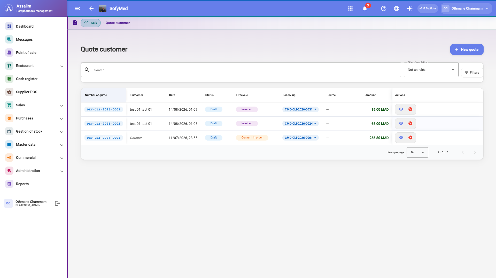
Create a quote
New quote
Click “+ New quote” in the quote list.
Select the customer
Choose the customer from the list or create a new one.
Add the lines
Add each product with its quantity and price. Apply discounts if needed.
Save and send
Save the quote, then print it or email it to the customer.
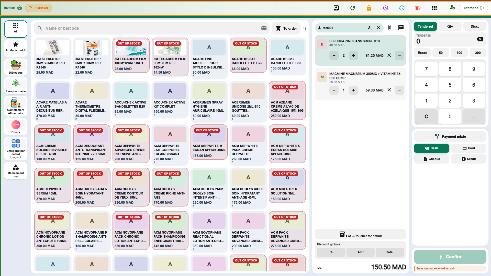
7.2 Sales orders
A sales order confirms the customer’s request. It can be created directly or converted from an accepted quote.
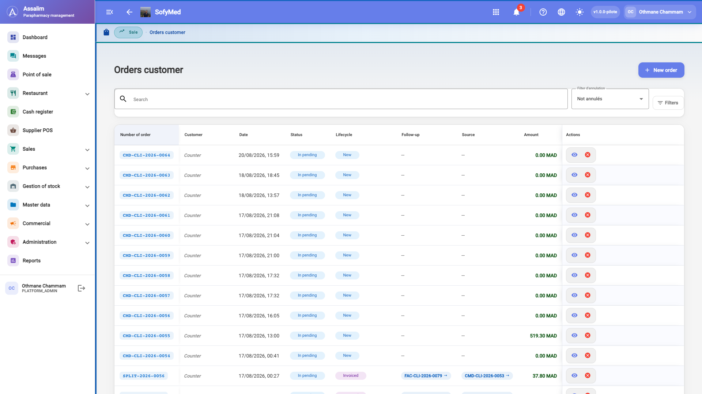
7.3 Delivery notes
The delivery note (BL) documents the physical dispatch of goods from stock. Confirming it decreases the corresponding stock.
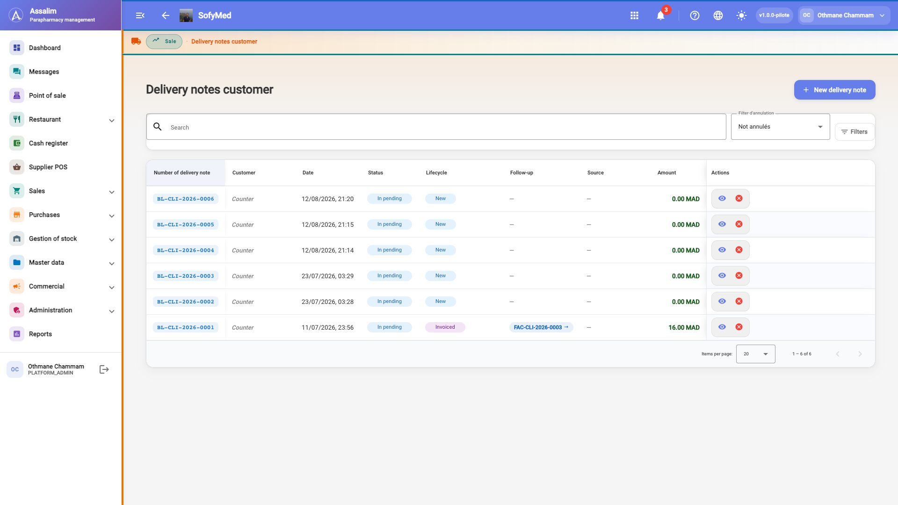
7.4 Sales invoices
The sales invoice is the official accounting document given to the customer. It can be generated from an order or a delivery note.
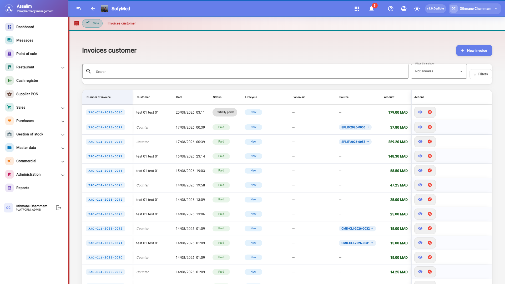
Actions on an invoice
- Print: generate a printable PDF
- Send by email: send the invoice to the customer
- Record a payment: enter a partial or full settlement
- Attach a file: attach a document (customer purchase order, etc.)
- Cancel: cancel the invoice (with justification)
7.5 Customer payments
Manage settlements received from your customers: invoice payments, advances and deposits.
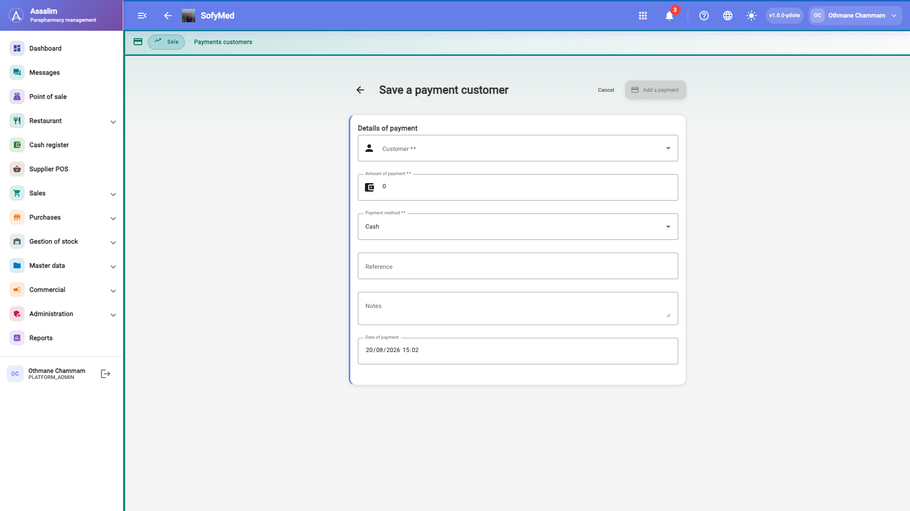
| Payment method | Description |
|---|---|
| Cash | Cash settlement, impacts the till |
| Bank card | Payment via card terminal |
| Cheque | Cheque presented for collection |
| Bank transfer | Transfer received on the account |
| Advance | Deposit deducted from future invoices |
Stamp duty may be added on the collected amount of each method, according to the rates entered in §15.1 (e.g. 0.25% on cash in Morocco). The duty amount is rounded to the coin step (0.25 → 0.30 if the step is 0.10). It is not part of invoice turnover (like a tip). It appears on the payment, the advance, the receipt and the closing report for the cash share.
7.6 Discussions and attachments on a document
On the record of a quote, order, delivery note or invoice (and on other similar screens, according to your rights), you can find two blocks useful for teamwork:
- Discussion linked to the document: a message thread reserved for this document (different from the general messaging in chapter 13). Use it to request an internal approval, notify logistics or leave a note visible to colleagues who open the same file. On a touch screen: same large targets and on-screen keyboard as in Messages.
- Attachments: add files (signed PDF, scanned customer purchase order, photo, etc.) to keep everything with the accounting document.
If you do not see these areas, your profile may not have the corresponding permission: ask an administrator.

7.7 Sales returns — Customer credit note
When a customer returns goods, you create a customer credit note directly from the original invoice.
Open the invoice
Go to Sales → Invoices, open the invoice concerned.
Create the return
Click Return (icon). A copy of the invoice opens in return mode.
Enter returned quantities
For each line, enter the quantities returned and their condition (saleable / damaged / expired). A product with Block return is not added to the credit-note ticket.
Confirm
The credit note is created with number AVOIR-CLI-XXXX. Stock is restocked and a PDF is available.
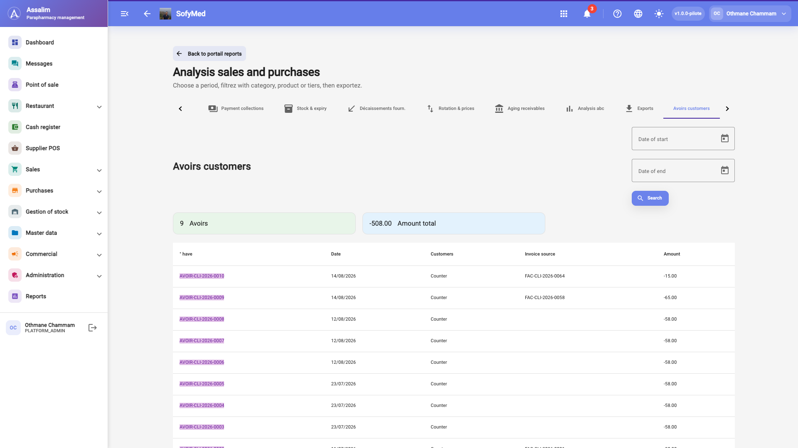
7.8 WhatsApp sharing
On an invoice record (and other sales documents), a WhatsApp button opens a pre-filled conversation (name, document no., amount) to the customer’s phone. Same principle for a reservation (date, covers, table) and a purchase proposal (lines + total to the supplier).
Purchase transactions
From the automatic proposal to supplier payment, via quotes and orders
The purchasing module covers procurement: automatic proposals, optional supplier quotes, orders, goods receipts, invoices and payments.
Not every step is mandatory: you can enter an order or an invoice directly according to your habit.
8.1 Purchase proposals
Purchase proposals are generated automatically by the system by analysing stock levels and the defined minimum thresholds. They are a decision aid for your purchasing manager.
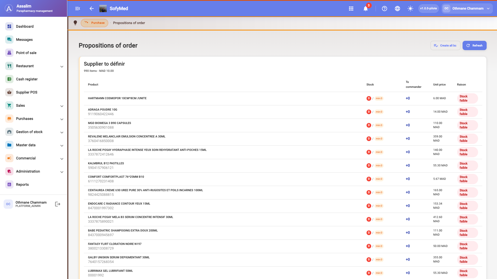
8.2 Supplier quotes
The supplier quote is a price request or a purchase proposal addressed to the supplier before you commit to a firm order. It is similar to the sales quote on the customer side, but here you are the one soliciting the supplier.
Open the Supplier quotes list in the Purchasing menu, create a new quote, choose the supplier and the lines (products, quantities, negotiated prices). You can then send it or convert it to a purchase order when the supplier accepts.
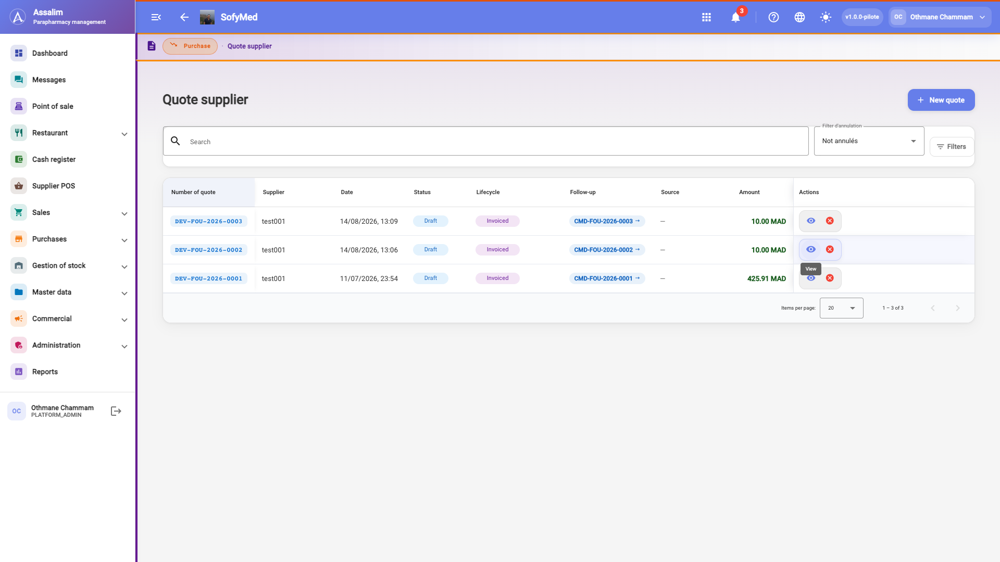
8.3 Purchase orders
Create a purchase order (PO) to send to a supplier. It can be generated from a proposal or created manually.
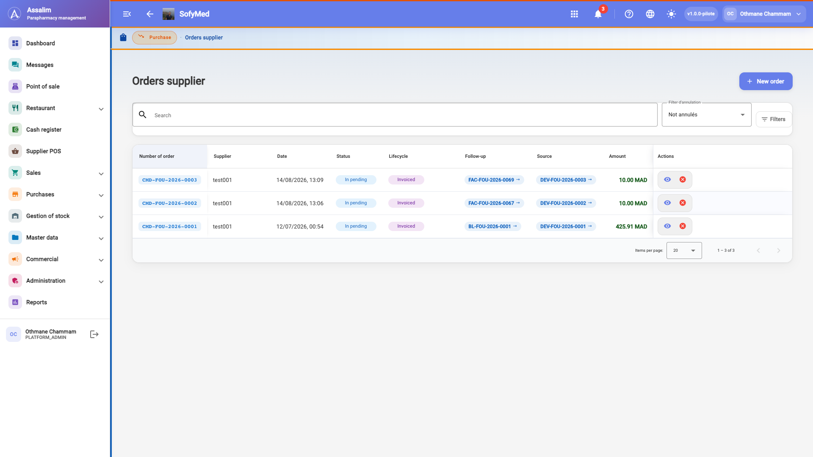
8.4 Goods receipts
On receipt of goods, create a goods receipt. This step updates stock and records the quantities actually received (which may differ from what was ordered).
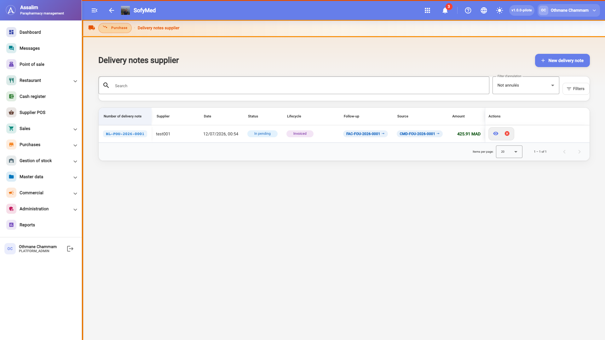
8.5 Supplier invoices
Record the invoices received from your suppliers for precise accounting follow-up of your commitments and supplier debt.
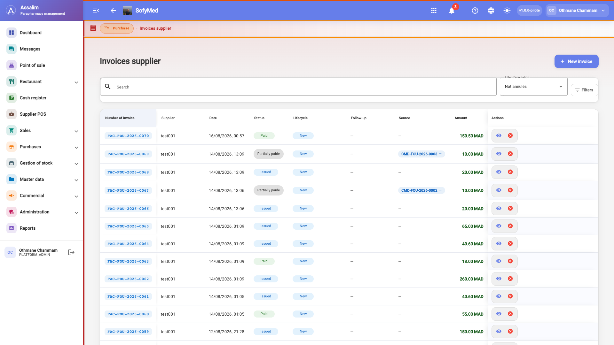
Purchase price history
Assalim keeps the purchase-price history for each product. You can consult the evolution of supplier tariffs and detect variations.
8.6 Supplier payments
Record settlements made to your suppliers and track your supplier debt in real time.
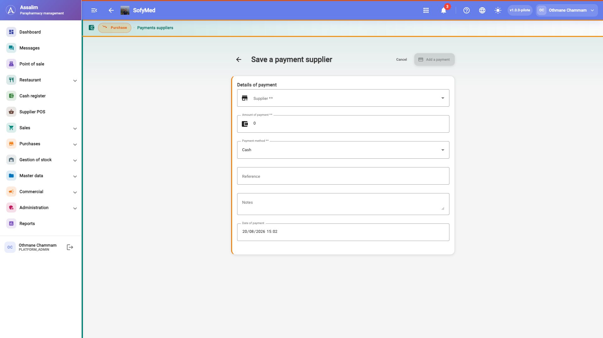
Stock & Inventory
Real-time tracking of your stock levels
9.1 Stock status
The Stock page gives you an instant view of quantities available for each product, with a colour-coded alert.
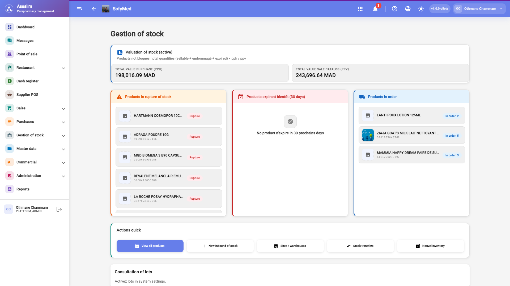
Stock indicators
| Colour | Meaning |
|---|---|
| ● Normal | Sufficient stock, above the minimum threshold |
| ● Low | Stock near the minimum threshold — replenish |
| ● Stock-out | Zero stock or below the critical minimum |
Stock movements
Each stock in or out is traced with the date, the reason (sale, purchase, adjustment, stocktake) and the associated source document.

9.2 Stocktakes
The Inventory module lets you perform physical counts and reconcile theoretical quantities with actual quantities.
Create a stocktake
Click “+ New stocktake” and choose whether you are doing a full or partial stocktake (by category).
Enter actual quantities
For each product, enter the physically counted quantity. You can also import data via a CSV file.
Check discrepancies
The application displays the differences between theoretical stock and counted stock.
Confirm and adjust
Confirm completion of the stocktake. Stock is updated automatically with the discrepancies found.
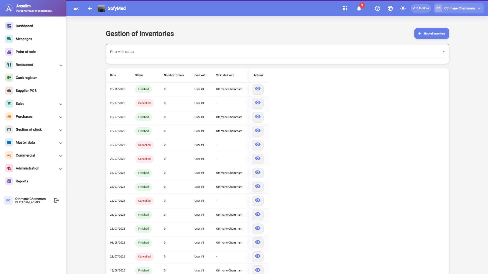
9.3 Stock and purchasing alerts
Alerts are available from the bell icon (notifications) in the toolbar, for authorised users. A badge indicates the number of unread items. Click a line to open the relevant screen (stock, purchasing, etc.).
At the bottom of the panel, shortcuts let you go directly to the Stock page or to purchase transactions.
- Stock-out / low-stock alert: product below the minimum threshold (similar alerts may be grouped)
- Expiry alert: product approaching or past its expiry date
- Other business alerts: depending on configuration, alerts related to purchasing may also appear
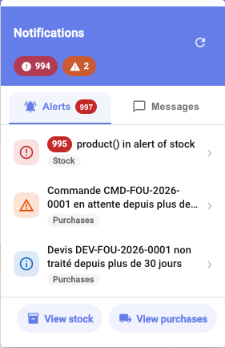
9.4 Expiry management
The Stock → Expired items page (/stock/expiry) lists all lots whose
use-by date (DLC) is approaching or has passed.
Colour codes
- 🔴 Red — lot already expired
- 🟠 Orange — expires within the next 7 days (critical)
- 🟢 Green — expires within the filtered window but not critical
Filter
Use the “Show lots expiring within X days” selector to adjust the analysis range (7, 30, 60, 90 days).
Destroy a lot
Click Destroy
On the row of the lot concerned.
Enter the quantity
Enter the quantity to take out of saleable stock (full or partial destruction).
Confirm
Saleable stock is reduced and the movement is recorded.
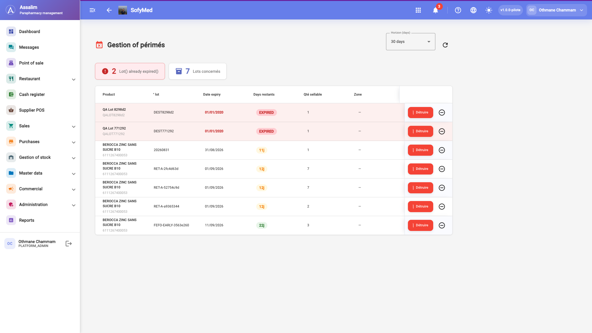
9.5 Sites / warehouses
Stock → Sites / warehouses (/stock/sites) lists storage locations.
The site marked POS (default) is the one used by the till and sales.
Other sites (warehouse, reserve, second shop) only receive stock by transfer.
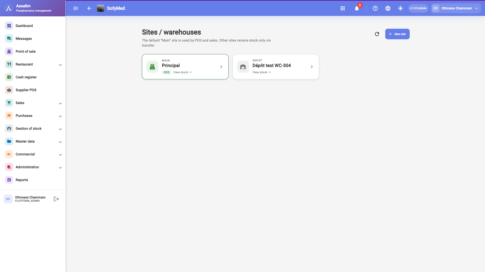
Create a site
Click New site, enter a code (e.g. DEPOT) and a name.
View a site’s stock
Open the site card to see saleable, damaged and expired quantities.
Change the POS site
On a site that is not the default, Set as POS: subsequent sales will debit this stock.
9.6 Stock transfers
Stock → Transfers (/stock/transfers) moves quantities from one site to another.
The full cycle includes shipping (out of the source site), optional transit,
and receiving at the destination. Quantity variances are recorded on receipt;
transfers above the configured threshold may require manager approval.
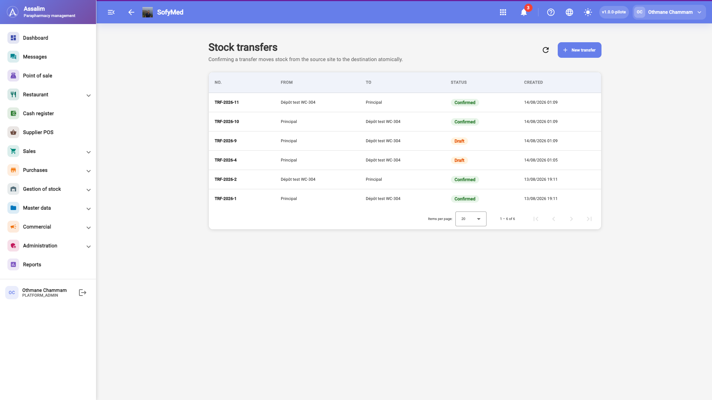
New transfer
Choose the source site, the destination site, add products and quantities.
Confirm
Tick Confirm now to execute the movement immediately, or save then confirm later from the record.
9.7 Retail network
Retail edition, Standard or Advanced profile: the
Retail network menu groups multi-site consolidation (/retail-network/*).
Required permission: stock:read (hidden on Essential edition or Simple profile).
| Screen | Route | Purpose |
|---|---|---|
| Network dashboard | /retail-network/network | Sellable / reserved / available KPIs per site |
| Thresholds & assortments | /retail-network/site-catalog | Min/max, coverage days, active assortment per site |
| Replenishment | /retail-network/replenishment | Suggestions per site; grouped supplier orders |
| Returns center | /retail-network/returns | Return policies; recent credit notes and supplier returns |
| Approvals | /retail-network/approvals | Pending approval requests |
| Cyclic inventory | /retail-network/cyclic-inventory | Plans per site/zone; open count session |
| CMP / shrinkage | /retail-network/shrinkage | Average cost per site; shrinkage entry |
| Stock reservations | /retail-network/reservations | Active reservations; release or expire |
On the product record, the network panel links multiple suppliers and unit conversions. On a purchase order, the fulfillment panel shows partial receipt and 3-way match (ordered / delivered / invoiced). Loyalty settings and customer record include points expiry and movement history.
Cash register
Management of cash sessions and cash movements
The Cash register module lets you manage the cash funds of your shop with full traceability.
Open a cash session
Access the cash register
Open Cash register from the Hub (dedicated tile) or from the side menu.
Declare the cash float
Enter the amount of cash present in the till at opening time.
Open the session
Click “Open the till”. The session starts and the POS becomes operational.

Cash movements
During the session, record movements not related to sales:
- Cash in: change brought in, refund received…
- Cash out: withdrawal for day-to-day expenses, cash payment to a supplier…
The numeric keypad is built in: type the amount directly, no extra button. Choose the payment method (Cash, Card, Cheque, Transfer, Other): only cash changes the theoretical till. A cash-in or cash-out requires a category (float, supplies, transport…). A cash-out also requires a reason. Categories are managed in §10.5.

Close the session and closing report
Count the cash
At the end of the day, physically count the contents of your till.
Enter the actual balance
Tap Amount counted, type on the keypad (always visible), then confirm the same amount. No extra “Numeric keypad” button.
Close the session
Click “Close the till”. A closing report is generated automatically.

Session history
Open the “History” tab to consult all past sessions, their closing reports and associated movements.
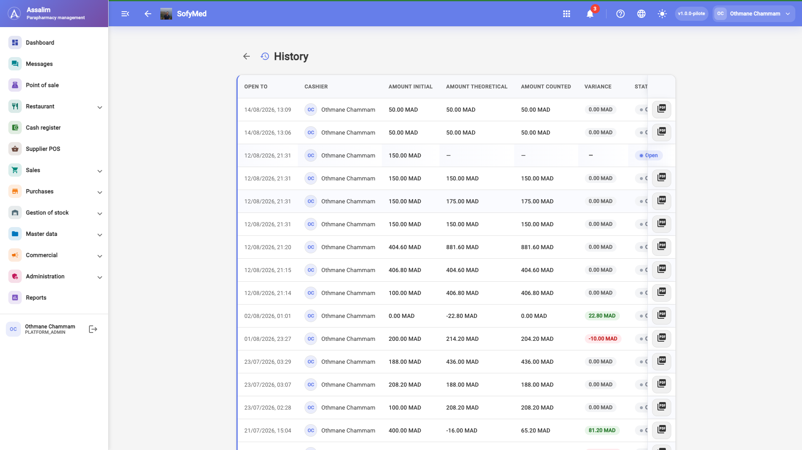
10.5 Cash categories
Access: Administration → Cash categories. Every cash-in or cash-out must be classified (float, supplies, transport, salary, miscellaneous…). The catalogue belongs to the establishment: create, edit or deactivate a category without changing the rest of the application.
- Code: unique identifier (e.g.
SUPPLIES). - Label in French, and optional Arabic label.
- Direction: cash-in, cash-out, or both.
- A deactivated category disappears from the dialog select, but remains on already recorded history.
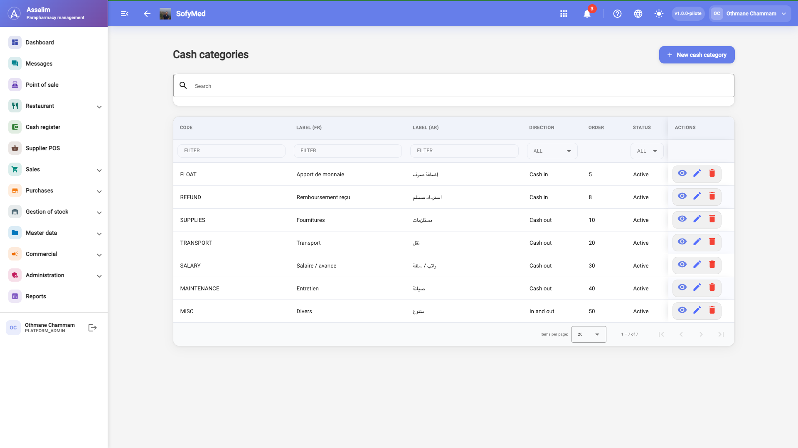
Click a row or + New to open the card: code, labels, direction, sort order and active.
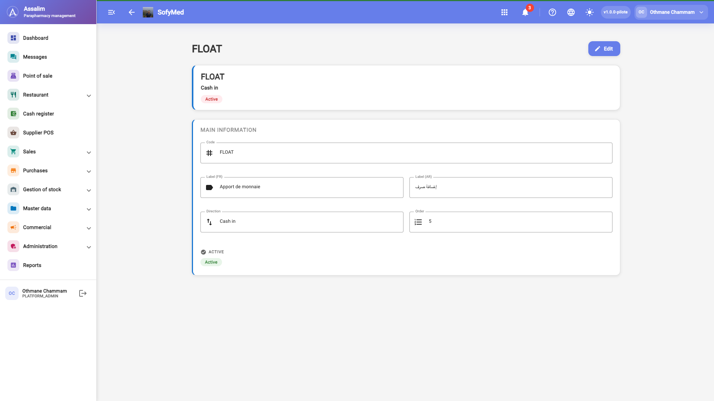
Reports & Analytics
Use your data to steer your activity
The Reports section gives you an analytical view of all your commercial activity with exports in several formats.
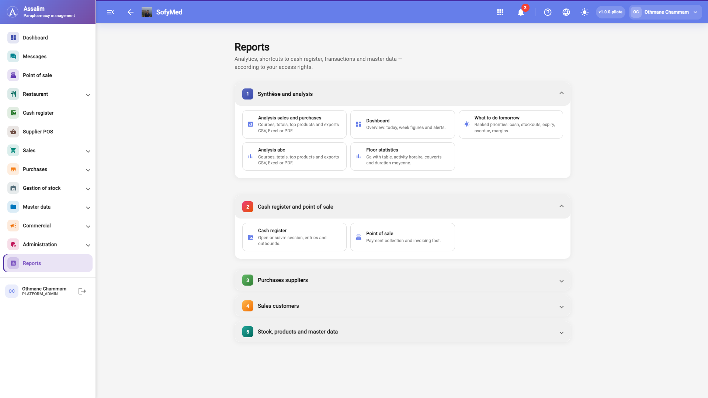
The first Reports page is organised in collapsible sections: quick access to charts (analytics) and the dashboard, links to the cash register and sales POS, purchasing shortcuts (purchase analytics, stock rotation, exports, purchase POS, supplier invoices and orders) and sales shortcuts (invoices, orders, delivery notes, quotes). Open the section that interests you then the corresponding button.
11.0 Reports page: overview
The following table lists the most common reports available from the menus and links in this area (exact on-screen labels may vary slightly depending on the version).
| Report | Description | Export |
|---|---|---|
| Sales by period | Turnover, quantities sold by day / week / month | CSV, Excel, PDF |
| Sales by product | Ranking of items by sales volume | CSV, Excel |
| Sales by customer | Turnover per customer and outstanding balance | CSV, Excel |
| Gross margin | Margin per product and overall for the period | CSV, Excel, PDF |
| Purchases by supplier | Purchase volume and debt per supplier | CSV, Excel |
| Stock status | Stock value and products out of stock | CSV, Excel, PDF |
| Cash register | Summary of cash sessions | |
| Analytics | Interactive trend charts | — |
| Customer outstanding / credit | Amounts due per customer, credit limits, remaining available, customers over limit; option to include zero balances | CSV |
11.1 Customer outstanding balances report (credit)
On the Reports page, the section dedicated to customer outstanding balances lets you load a receivables statement: total receivables, number of customers concerned, and a detailed table (name, phone, balance, credit limit, available credit, over-limit indicator). Tick the option to include customers with a zero balance if you want a complete view. A button lets you export the data as CSV.
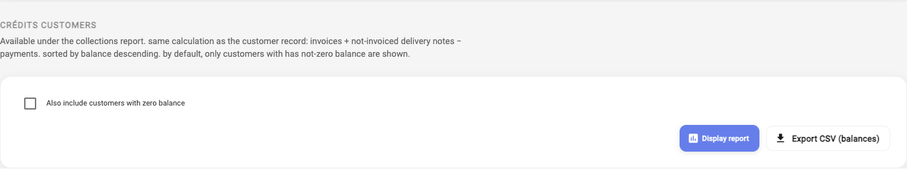
11.2 Filter and export a report
Choose the report
Click the desired report category in the menu.
Set the period
Use the date picker to define the time range.
Apply filters
Narrow by category, product, customer or supplier depending on the report.
Export
Click the desired export button (CSV, Excel or PDF).
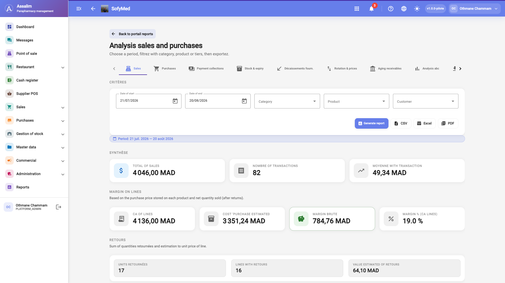
11.3 Receivables aging (Aging 30/60/90 days)
The Receivables aging tab gives you a view of all unpaid invoices, classified by age. This helps you prioritise customer follow-ups.
| Column | Meaning |
|---|---|
| Not due | Invoices whose due date has not yet been reached |
| 0–30 d | Overdue by less than one month |
| 31–60 d | Overdue by one to two months |
| 61–90 d | Overdue by two to three months |
| > 90 d | Overdue by more than three months — follow up as a priority |
Click Export PDF or Print for a paper version ready to send.
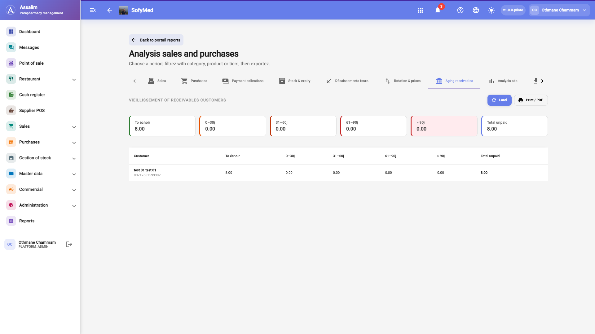
11.4 Product ABC analysis
ABC analysis classifies your products into three categories according to their contribution to turnover:
- 🅰 Class A — Top 70% of turnover: your flagship products. Stock priority and supplier negotiation.
- 🅱 Class B — Next 20%: important products to monitor.
- 🅲 Class C — Remaining 10%: marginal products, to rationalise if appropriate.
Select an analysis period (month, quarter, year) and click Analyse.
Summary cards show the number of products and their turnover by class. The detailed table shows rank, % of turnover, and the cumulative.
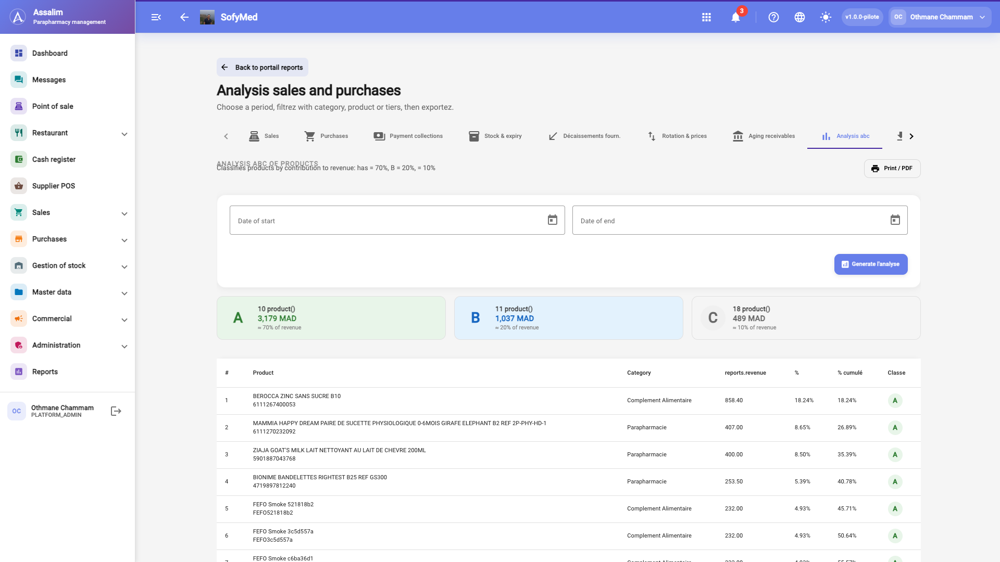
11.5 Customer credit notes (report)
The Customer credit notes tab lists all credit notes issued over a given period (number AVOIR-CLI-XXXX). It shows the customer, amount, original invoice and date.
- Filter by period with the date pickers.
- The total of credit notes is shown at the bottom of the table.
- Export as CSV for your accounting.
11.6 DGI accounting exports
The Accounting exports (DGI) tab lets you generate the regulatory files for Morocco’s Direction Générale des Impôts.
| Export | Content |
|---|---|
| Journal of entries | All accounting entries (sales, purchases, receipts, disbursements) over the period |
| General ledger | Summary by accounting account (3421, 4411, 7111, etc.) with balances |
| VAT return | Taxable base and VAT collected/deductible by rate |
Select the period
Choose the start and end dates.
Click the download button
The CSV file is downloaded automatically.
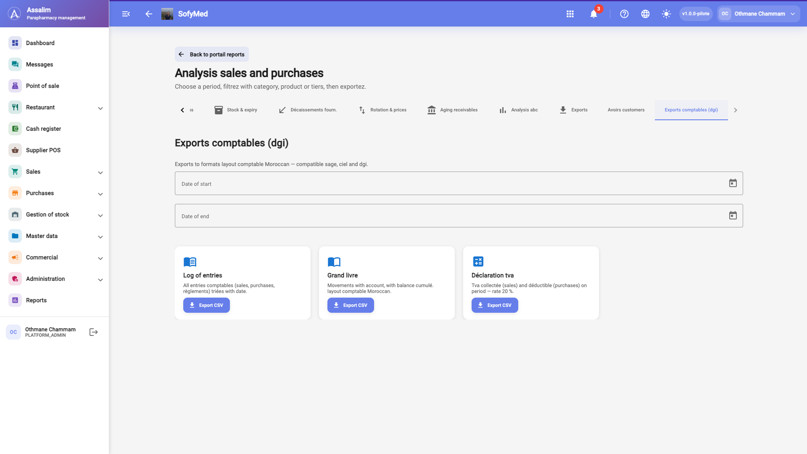
HoReCa — Food service
Table management, floor orders, kitchen display (KDS), statistics and waiter call
/horeca/salle (floor plan) and /horeca/cuisine
(KDS kitchen display). The root /horeca redirects automatically to the floor plan.
12.1 Floor plan
The Floor plan screen offers a graphical view of your restaurant. Each table is positioned on the map and shows its status in real time. The bell at the top right signals pending waiter calls; each table can display a printable QR code. Fit to view frames every table and wall in the screen. A confirmed reservation shows as a time badge on the table (e.g. 20h · 4 p.). In layout settings, rearrange mode is on immediately (drag, handles, Decor). The waiter-call QR stays on the live floor plan. You can rotate a table or decor (45°), resize tables and decor with the handles while rearranging, add zones (terrace, bar…) and decor (plant, counter, sofa, door), and pan with the mini-map.

Table statuses
| Status | Description |
|---|---|
| Free | Table available, ready to welcome customers |
| Occupied | Customers seated, order in progress |
| Reserved | Table reserved for a specific time |
| Waiting | Order sent to the kitchen, being prepared |
12.2 Table management
Click a table on the floor plan to access its order menu.
Open the table
Click a free table to start a new order.
Add items
Tap a dish or scan it. If it has extras, an Options sheet opens: tick extras and type the kitchen note (no onion, well done…) on the same screen — there is no separate notes icon. Before sending to the kitchen, ⋯ on the line then Options reopens this sheet to change or remove extras. After Add, the cursor returns to search for the next scan.
The same dish twice with different notes = two lines (each with its note, two KDS tickets). Same dish, same extras, same note = one line with the quantity increased.
Send to the kitchen
Click “Send to kitchen”. The items appear immediately on the KDS screen.
Collect
Once the meal is finished, click “Collect” to switch to POS mode and settle the bill.

Service modes
- Dine-in: floor service with an associated table
- Takeaway: order without a table
- Delivery: order with a delivery address
Table transfer
To move a customer from one table to another (freeing a table, reorganisation…), use the “Transfer table” function from the source table menu.
12.3 Kitchen display (KDS)
The KDS (Kitchen Display System) is the screen dedicated to the kitchen. It displays in real time all orders sent from the tables.
Using the KDS
- Each ticket shows the table, the items, the extras and the kitchen note, plus the send time
- The cook ticks each item as it is prepared
- When all items are ready, the ticket is marked “Ready”
- A signal is sent to the waiter for service
12.4 Reservations
Manage your customers’ reservations directly from Assalim.
Create a reservation
Click “New reservation”
From the Reservations page or from a table on the floor plan.
Fill in the information
Customer name, date and time, number of covers, desired table (optional) and special notes.
Confirm
Save the reservation. A time badge (e.g. 20h · 4 p.) appears on the table on the floor plan.
12.5 Floor statistics
Access: Floor statistics menu (/horeca/stats) or via the Reports hub.
- KPIs: total turnover, sessions, average covers, average duration, turnover rate.
- Hourly heatmap: turnover histogram by time slot (peak hours).
- Performance by table: ranking by turnover, sessions and occupancy duration.
- Turnover by waiter: ranking of users by generated turnover.
- Period: 7 days, 30 days, 90 days or custom dates.
- PDF export: “Export PDF” button → print via the browser.
12.6 Split the bill
From the table session, the “Split the bill” button lets you split items between two shares (e.g. two groups of guests).
Open the dialog
Click “Split the bill” from the session footer.
Allocate quantities
For each item, indicate how many go on bill 1 and bill 2. Use “Split evenly” to divide in one click.
Collect each share
On confirmation, a sub-order is created per share and the POS opens to collect the first one.
12.7 Counter order (takeaway / delivery)
For orders without an assigned table, use the “Counter” button on the floor plan.
Choose Takeaway or Delivery — the /horeca/comptoir page opens
with the same interface as the table session (product search, kitchen send, collection).
12.8 Waiter call (QR code)
Each table has a unique QR code allowing customers to call a waiter from their phone, without an account or app.
/call/{token} link is accessible without signing in. The customer scans the QR, sees their table name
and presses “Call waiter”. An optional message can accompany the call.
Set-up (staff)
Show the QR code
On the floor plan, tap the table’s QR code icon (always visible, including on touch screens).
Print or copy
Print the QR (“Print” button) to laminate it on the table, or copy the link.
Handle calls
The floor-plan bell shows pending calls. Acknowledge them from the side panel.
/call/{token} — the customer calls a waiter without signing in.12.9 Phone / Glovo / Uber deliveries
The HoReCa → Deliveries board (/horeca/livraisons) tracks orders
to deliver. There is no partner API: staff copy the Glovo / Uber ticket
(platform no., customer, address) or enter a phone order.
Create a delivery
New delivery
From the board, or from the floor plan → Counter → Delivery.
Channel
Phone (customer number required), Glovo / Uber Eats (platform order no. required), or Other.
Take the order
After saving, the counter opens to add items. Kitchen send only happens if at least one line goes to the kitchen; the ticket then moves to In prep.
Advance the status
On the card: Received → In prep. → Ready → On the way → Delivered. WhatsApp is offered if the channel is phone and a number is filled in.
Internal messaging
Communicate with your colleagues directly from Assalim
The internal messaging module lets users of your establishment
communicate with each other without leaving the application. Open the Messages page
from the side menu or a Hub tile (address /messages).

Messaging features
- Conversations: start a one-to-one discussion or a group from the message list
- Messages: send texts with attachments
- Search: quickly find a conversation or a message
- Notifications: receive real-time alerts for new messages
- Opening: clicking a conversation scrolls the thread to the last message (above the input)
- Touch: lists, bubbles and the composer are finger-sized. In touch mode or on the POS, the on-screen keyboard stays visible under the input — no extra button
Start a conversation
Open messaging
Click the messaging icon in the menu or go to Messages.
New conversation
Click “New conversation”, tick a colleague for a one-to-one exchange, or several (at least two other people) for a group. You can give the group a name (optional).
Send a message
Tap the input (or the on-screen keyboard when it is shown), then Send. Edit / delete actions on a message are visible to a finger, without hovering.

13.3 Open a conversation
From the list, click a conversation: the thread opens already at the bottom, on the last message (text, voice or image). You do not need to scroll by hand. If an image loads afterwards, the thread stays pinned to the bottom until you scroll up to read history. “Load older” keeps your place in the thread.
Commercial
Loyalty, promotions and price lists
The Commercial side menu groups the establishment’s commercial rules: loyalty, promotions and price lists. It is distinct from the Administration menu (users, establishment, cash categories, backup…).
14.1 Loyalty
Configure the programme from Commercial → Loyalty. Use at the till (points widget, redemption) is described in section 6.6.
| Setting | Description |
|---|---|
| Enable the programme | Enables or disables the loyalty widget at the POS |
| Points per MAD spent | Number of points credited for 1 MAD of sales |
| Value of a point (in MAD) | Conversion on redemption (e.g. 1 point = 0.1 MAD) |
| Max % discount per redemption | Caps the loyalty discount (e.g. 20% max of the invoice) |
| Bronze / Silver / Gold threshold | Points required to reach each level |
Click Save to apply the changes. Changes take effect immediately at the POS.
14.2 Promotions
Access: Commercial → Promotions. Create time-limited campaigns (%, amount, strikethrough price or 2+1 offer). At the POS, the catalogue price is struck through and a badge shows the promo.
| Type | Effect at the POS |
|---|---|
| % discount | Percentage off the unit price |
| Amount | Discount in MAD on the unit price |
| Strikethrough price | Forced price (“strikethrough price” label) |
| 2+1 / X+Y | Pack: buy X, get Y free |
- Target products and/or categories. No target = the whole catalogue.
- If several promotions apply, only one is kept (highest priority).
- POS price stacking: catalogue → customer price list → 1 promo → loyalty-level %, then point redemption.
Click a row or the eye icon to open the record: type, value, dates, priority, targeted categories and products, then Edit or Delete.
14.3 Price lists
Access: Commercial → Price lists. A list defines prices per product (and optionally a minimum quantity tier). You assign it to the customer from their record (drop-down list), not from the POS.
Create the list
Name it, add lines (product, min qty, price).
Assign it to the customer
Open the customer record and choose the list in the field provided.
Sell at the POS
As soon as this customer is selected, the list price applies (before promo and loyalty).
The eye icon opens the detail: name, active status, and the lines (product, min quantity, unit price).
Settings
Application configuration, users, licence and database backup
15.1 General settings
Configure your establishment information, document appearance and global application settings.

| Setting | Description |
|---|---|
| Company name | Name that appears on your invoices and receipts |
| Logo | Logo printed on documents |
| Address | Full address of the establishment |
| Phone / Email | Contact details displayed on documents |
| Currency | Currency used (e.g. MAD, EUR, USD) |
| Amount step | HALF_UP rounding of every amount (lines, Sales / Returns / Line discounts recap, ticket, stamp duty, tip, cash, change). Default 0.10 for MAD. Percentage rates are not rounded to the step. Catalogue prices are not rewritten (14.50 struck through, total 13.10; 0.25% stamp on 100 → 0.30). |
| Default VAT | VAT rate applied by default on products |
| Receipt footer | Custom message on till receipts |
| Scan delay | Wait time after barcode scan (ms) |
| Disable stock management | If enabled: no stock tracking on sales (till, delivery notes, invoices) and Stock / Inventory modules hidden; if disabled: usual behaviour |
| Allow negative stock | If enabled (stock management on): a sale or delivery note can take sellable stock below zero, after confirmation at the till. Disabled by default. No effect if stock management is disabled. See §6.9. |
| Lock till after inactivity | Delay in seconds before the POS face wall (default 90, 0 = never, max 3600). See §6.11. |
| Stamp duty by method | Rate in % on the collected share (excluding duty). Default 0. Outside turnover, like a tip. See §7.5. |
| Tips | If enabled: a Tip line (MAD amount) at the bottom of the POS payment block (under the methods or split). Outside the invoice total; included in checkout (cash or card). Amount and mode are stored on the invoice and in the draft. Off by default. |
| Price on labels | Shows the selling price on shelf labels (A4 or roll). See §4.1. |
15.2 User management
Create and manage the accounts of all users who have access to Assalim in your establishment.
Create a user
Click “+ New user”
From the Settings → Users section.
Fill in the information
First name, last name, email address (will serve as sign-in identifier) and initial password.
Assign a role
Select the appropriate role: Administrator, Manager, Pharmacist, Cashier or Kitchen.
Save
The user can now sign in with their credentials.
15.3 Roles & Permissions
Assalim’s permission system is very granular. You can define precisely what a role can or cannot do.
Available permissions
| Resource | Actions |
|---|---|
| Dashboard | Read |
| Sales POS | Read / Write |
| Purchase POS | Read / Write |
| Sales (quotes, orders, delivery notes, invoices) | Read / Create / Edit / Delete |
| Customer payments | Read / Write |
| Purchasing (all steps) | Read / Create / Edit |
| Supplier payments | Read / Write |
| Stock | Read / Write |
| Stocktakes | Read / Write |
| Products / Categories | Read / Write |
| Customers / Suppliers | Read / Write |
| Cash register | Read / Write |
| Reports | Read |
| Users | Read / Create / Edit |
| Settings | Read / Write |
| Kitchen (KDS) | Read / Write |
Individual permissions (overrides)
In addition to roles, you can grant or remove a specific permission for an individual user, without changing their global role. Go to the user record → “Permissions” tab.
15.4 Licence management
The licence section lets you consult the status of your Assalim licence and activate or renew it.
Activate a licence
Obtain the licence key
Your reseller provides you with a unique activation key.
Go to Settings → Licence
Open the licence management section.
Enter the key
Paste your key in the field provided and click “Activate”.
Confirmation
A success message confirms activation. The expiry date is updated.
15.5 Login history
Login history records each access to the application: user, date, time, IP address and device used. This helps detect suspicious logins.
15.6 Two-factor authentication (MFA)
MFA (Multi-Factor Authentication) adds a layer of security to your account. In addition to your password, a 6-digit code generated by an app such as Google Authenticator or Authy will be requested at each sign-in.
Enable MFA
Open MFA settings
Go to Settings → Security (MFA).
Scan the QR code
Open Google Authenticator on your phone → + → Scan a QR code → point your camera at the displayed code.
Enter the verification code
Enter the 6-digit code shown in the app → click Verify and enable.
Disable MFA
On the same page, click Disable, enter the current TOTP code to confirm.
15.7 DGI tax identifiers
Fill in your tax identifiers in Settings → Establishment, section “DGI Morocco tax identifiers”. This information appears automatically on all your PDFs (invoices, credit notes, delivery notes).
| Field | Description |
|---|---|
| ICE | Identifiant Commun de l'Entreprise (15 digits) |
| IF | Tax identifier (tax number) |
| RC | Trade register |
| Patente | Patente number |
| Share capital | Capital in MAD (shown on invoices) |
15.8 Database backup
Access: Settings → Database backup (/settings/backup).
Reserved for administrators.
Download a backup
Open the Backup page
From Settings, click the red “Database backup” link.
Download
Enter a password (≥ 8 characters) twice, then click “Download backup”. An encrypted .assalim.bak file is downloaded.
Keep it in a safe place
Store the file on an external drive or an encrypted cloud.
Restore from a backup
Select the file
Choose a .assalim.bak file (or a legacy .sql) and enter the password if the file is encrypted.
Confirm
Type exactly RESTAURER in the confirmation field.
Restart the server
After the restore, restart the backend to ensure data consistency.
pg_dump and psql
in the system PATH (or configured via pg.tools.path).
15.9 Till screen options
Access: Settings → Till screen options. A toggle can only hide a block already provided by the profile (shop, counter, pharmacy, restaurant): discounts, returns, tip, search, attachments, conversation, and so on.
- Always visible (no toggle): Customer / Supplier chip.
- Context-driven (no toggle): balance and limit, loyalty, commercial pricing — see §6.10.
- “Show all” restores blocks you hid manually.
- Catalogue (categories and tiles): if you hide it, the till no longer shows the aisle; scan and search remain (temporary list). The ticket widens (§6.1).
The same options apply to sales POS and purchase POS. Loyalty and commercial pricing remain sale-only.
Mobile manager app
Steer the activity from a phone (PWA or Android APK)
The manager app is a polished view for the manager on the move: today’s figure, till status, stock / use-by alerts, shortcuts. It does not include the full POS (open the POS from the More tab if needed).
16.1 PWA at the /m address
After sign-in, open /m or tap the “Open the manager app” banner on the Hub.
Three tabs at the bottom: Home (turnover, till, KPIs), Alerts (same action plan as the dashboard),
More (POS, hub, stock, reports, settings, sign out).
- Pull-to-refresh: pull down to refresh. An auto-refresh occurs every 45 s if the tab is visible.
- Offline: banner + data possibly cached (freshness ~10 min).
- Install: iPhone → Share → Add to Home Screen. Android Chrome → first unlock the home-screen layout, then menu → Add to Home screen. Over HTTP on a local IP (e.g.
192.168.x.x), Chrome creates a shortcut, not a “stores” app.
16.2 Android application (APK)
A Capacitor APK (com.assalim.app) opens the same /m view full screen, with the Assalim icon.
In pilot / LAN mode, the app loads the server address (Mac or PC running Assalim): phone and server
must be on the same Wi‑Fi. The Play Store is not yet the distribution channel.
Assalim Essential (Hanout)
Neighbourhood grocery: simple UI, customer credit, single-site stock
Assalim Essential is the GROCERY + Simple experience profile
+ Essential edition trio. The menu shows four tiles: Sell, Ledger,
Stock, Today. Quotes, orders, HoReCa and advanced ERP modules are hidden
(data stays in the database if you switch back to Retail).
17.1 Simple profile and hub
- Guided setup: business,
CAISSE1till, optional CSV import, first sale. - Step 2 asks whether you use a barcode scanner and sell by weight (preferences stored for the shop).
- Sales POS: direct invoice, cash or customer credit, USB scanner with no configuration.
- Purchase: direct supplier receipt (paid / balance).
- Till: open, movements, guided close (count before theoretical amount).
- Certified offline: direct sale/purchase invoices queued; inventory, close and later payments blocked with a message.
17.2 Ledger and statement
The Customers menu becomes Ledger: balances, sorting, quick collection without a new invoice, auditable history (cancelled lines kept).
- Collect: Ledger → customer → amount → method → receipt.
- Share statement: menu with WhatsApp (FR/AR pre-filled via
wa.me), PDF export (print dialog “Save as PDF”) or downloadable PNG image. - No automatic send: you tap Send in WhatsApp.
17.3 Upgrade to Retail
Establishment settings: switch edition to Retail and profile to Standard. A checklist appears (backup, diagnostics, modules, 2nd site, inventory, training). Returning to Essential hides without deleting.
17.4 Pilot metrics and hardware
On Today, managers see a Pilot journeys (30 days) table: setup, first sale, cash sale at scanner, till close, ledger collection, statement share and offline replay — with median durations and SLA targets.
Till settings list certified 80 mm USB printers (Xprinter XP-N160I, Epson TM-T20III) with wiring and test steps. Validate Arabic RTL on a real ticket before go-live.
Glossary — common terms
Short definitions to help you find your way in the manual and on screen
| Term | Simple meaning |
|---|---|
| BL (delivery note) | Document that attests goods have left for the customer; decreases stock when confirmed. |
| Hub | Home page with coloured tiles to open modules (sales, purchasing, etc.). |
| POS | “Point of sale”: till screen to sell or, in Purchase POS, to record a supplier receipt. |
| Quote | Price proposal; becomes an order or invoice once accepted (sales or purchasing side). |
| Order | Commitment on quantities and prices; the delivery note or goods receipt materialises the stock out or in. |
| Invoice | Accounting document that records the sale or purchase and the amount due. |
| Outstanding / customer credit | Amount the customer still owes you across all their invoices. |
| Supplier debt | Amount you still owe the supplier. |
| Cash session | Period during which cash payments are tracked; open in the morning, close at the end of the day or service. |
| Stocktake | Operation where stock is physically counted and discrepancies are corrected in the application. |
| Purchase proposal | Automatic replenishment suggestion based on stock levels. |
| RTL | Right-to-left reading direction; used in Arabic for the menu and texts. |
| KDS | “Kitchen Display”: kitchen screen that shows orders to prepare (HoReCa). |
| Waiter call (QR) | Public page /call/{token} allowing the customer to call a waiter by scanning a QR code on the table. |
| Split bill | Division of the bill into several shares for separate collection at the POS. |
| Deliveries board | HoReCa kanban of phone / Glovo / Uber orders (manual entry, no partner API). |
| Site / warehouse | Stock location; the POS site (default) is debited by sales; others are filled by transfer. |
| GS1 DataMatrix | 2D code scanned at the POS that can contain GTIN, lot and use-by date in addition to the barcode. |
| Manager app | Phone view /m (PWA or APK) for the manager’s turnover, till and alerts. |
| Locked mode | Full-screen cashier (POS) or waiter (floor); exit requires the manager password. |
| Till lock (PIN) | Face wall + PIN during a POS session (break); distinct from locked mode in the account menu. |
| Stamp duty | Percentage on the collected share of a payment (often cash); outside invoice turnover, like a tip. |
| Customer display | Second screen /pos/customer-display that shows the basket to the customer during collection. |
| Licence | Right to use Assalim at your establishment; may display an expiry date. |